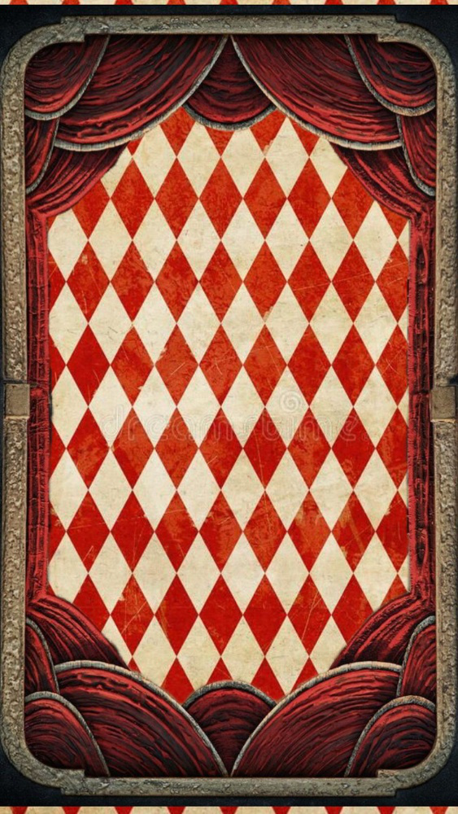
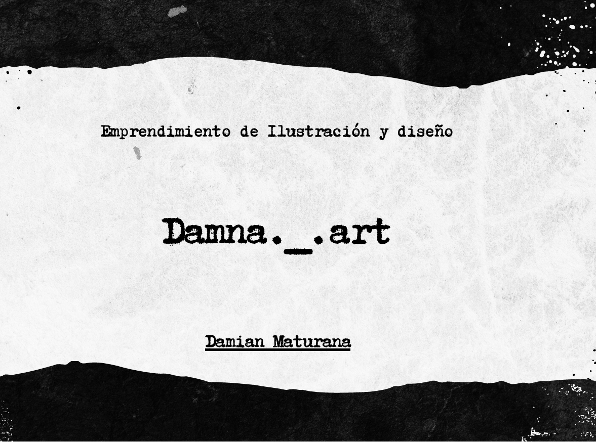
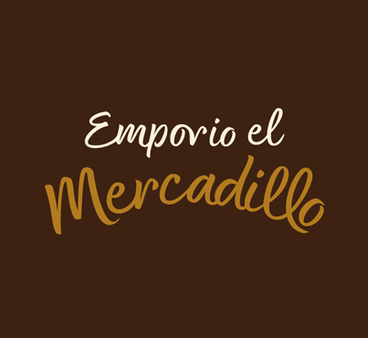
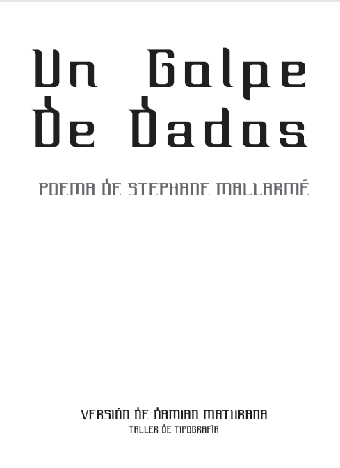
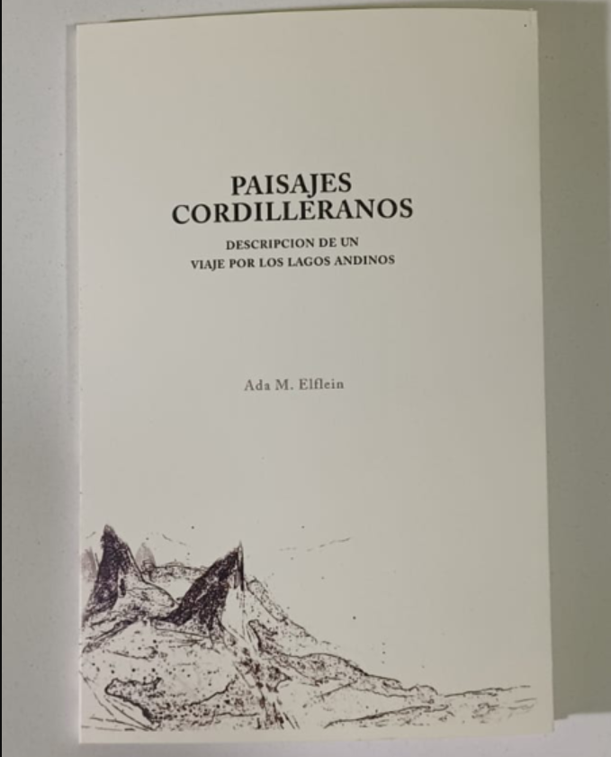
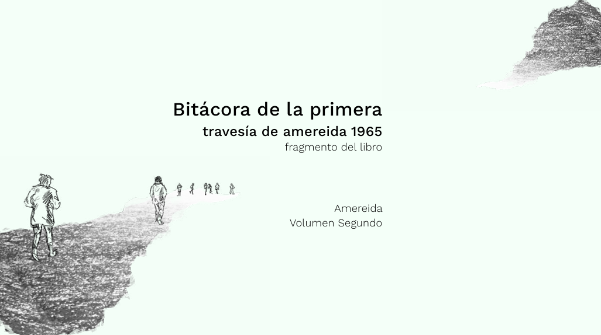

Ediciones y Trabajos

Damna Art (Instagram)
Rediseño imagen de marca El Mercadillo Valpo (Instagram)
Reedición Un golpe de dados (Experiencia tipográfica-editorial)
Reedición Paisajes Cordilleranos (Edición Digital) Pieza grafica de naturaleza (Edición Digital)
Pieza grafica de naturaleza (Edición Digital)
 Tipografía Fragile (Experiencia Tipográfica)
Tipografía Fragile (Experiencia Tipográfica)
 Tipografía creada SUMMUM grotesk (Experiencia Tipográfica)
Tipografía creada SUMMUM grotesk (Experiencia Tipográfica)

Reedición Travesía de Amereida 1 (Experiencia editorial digital)
Próximas experiencias